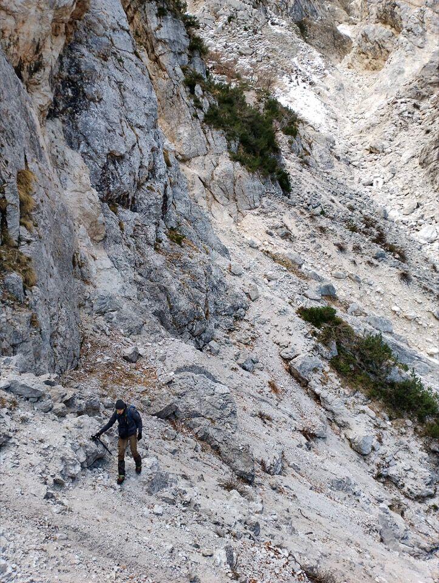
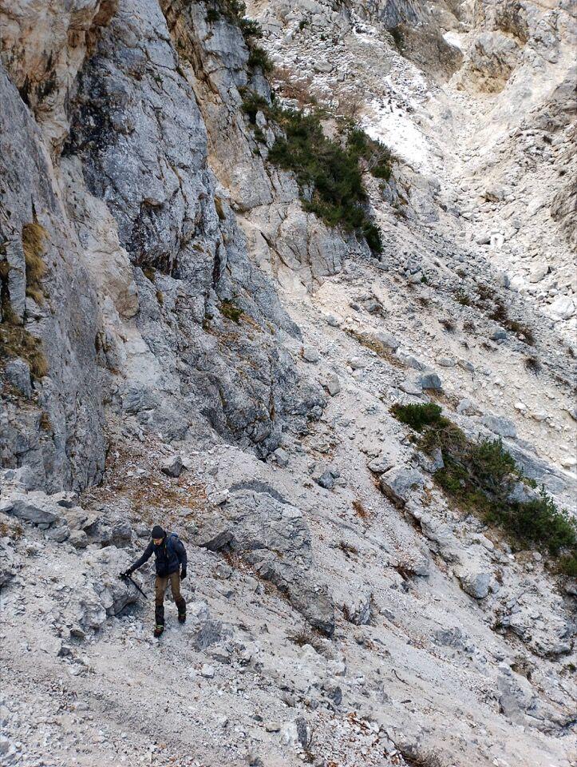

Cima alquanto misterosa, salita estremamente di rado (non c'era nemmeno un ometto di vetta), come del resto quelle nei dintorni. Mi è venuta voglia di salirci dopo un paio di gite nella valle del Resartico, in quanto oltre alla soddisfazione in sé della salita offre un ottimo punto di osservazione sui desolati monti vicini. Guardando la Tabacco non è per niente chiara la morfologia del monte e nemmeno la sua quota: consiglio di salire sul Lávara per capire come è fatto e come salirci.
Il toponimo è piuttosto interessante: nelle vecchie mappe veniva indicato semplicemente come Palòn, accrescitivo di pala, riferito all'ampio versante boscoso a Sud; mi incuriosiva l'appellativo Zapus, e interpellata sulla questione, la gentile signora Anna Maria Beltrame di Resiutta mi ha fatto sapere, tramite cacciatori della zona, che il toponimo risale al periodo estrattivo della miniera del Resartico (1867-1943), e si riferisce al soprannome di una delle famiglie di Povici (esattamente Zábus, poi trascritto erroneamente in Zapus). Mi dice che «Qualche erede dei Zabus è tuttora vivente e risiede a Povici. Tutti i boschi della zona ai tempi della miniera erano in gestione diretta dal comune di Resiutta; dietro semplice domanda in comune, i residenti potevano sfruttare il legname (principalmente faggio), quindi si può pensare che tutta la conca sia stata sfruttata dai residenti per il taglio dei boschi; usando il soprannome si identificava l’area di taglio del legname».
Partiamo da Povici: in fondo alla foto la cresta che collega il Plauris al Lávara. La cima del Palòn dei Zábus è la più alta (ovvero quella più a sinistra) della serie di cime a destra, composta da: Palòn dei Zábus, Punta Salvotis, Uarchèc.

Ecco una foto più dettagliata della dorsale, fatta dalla strada della val Resia: in ordine, da sx a dx, il Palon dei Zábus, la Punta Salvotis, la boscosa q1345 e il Uarchèc.


L'alba ci sorprende quando siamo già ben inoltrati nella valle del Resartico; in foto il Cozarèl. Il crinale in ombra a sinistra fa parte del Pisimoni: l'occhio attento riconosce forcje Diame e l'inizio orientale del cengione Sud.
Difficile restare indifferenti davanti alla repulsiva parete Nord del Lávara.
Appena abbandoniamo il sentiero CAI ci troviamo in un ambiente a dir poco affascinante e solitario.

Cengione, su cui non ho dubbio passino le bestie, che permetterebbe di collegarsi all'accesso alto delle miniere del Resartico.

A parte le informazioni dedotte dalla CTR non abbiamo alcuna indicazione: seguiamo il nostro intuito, sulla base della nostra esperienza. Ci facciamo anche aiutare dagli animali seguendo le loro tracce.


La risalita del bosco del palòn è davvero faticosa; la cima è protetta da una folta mugheta, che ci fa penare non poco.


Finalmente arriviamo in cima; panorama davvero inconsueto sul Plauris e su Pale di Misdì.

Uno dei motivi per salire sul Palòn era di avere una visuale completa sul rio Puntuz, il quale oppone un grosso salto da aggirare in qualche modo. È in programma di salire (o scendere) per esso fino alla forcella.

Ovviamente sono andato anche a curiosare verso Punta Salvotis.


Lo Spic è la cima più a sx; vedo tutto il percorso che ho fatto per arrivare in cima (nel pendio in centro foto); la cima a dx è la q1264.

Verso la dorsale Spic - Vetta Criuze - Àrghine - Lávara.


Dirimpetto, il Pisimoni con il cengione Sud in tutta la sua interezza. Molto interessante anche il canalone del rio di Place, con il Cuel di Sôre e il Ciuc da la Muinie (o cima Uerch secondo il Gaberscik).
La Mariane, molto interessante da questo lato.

Il selvaggio gruppetto di cime che fanno capo al Cuel Mauròn.

Verso i monti della val Raccolana.
Verso Muéç.

Torniamo indietro; la ghiaia ghiacciata non piace a nessuno.

Parte terminale del vallone del riu Puntuz
 
